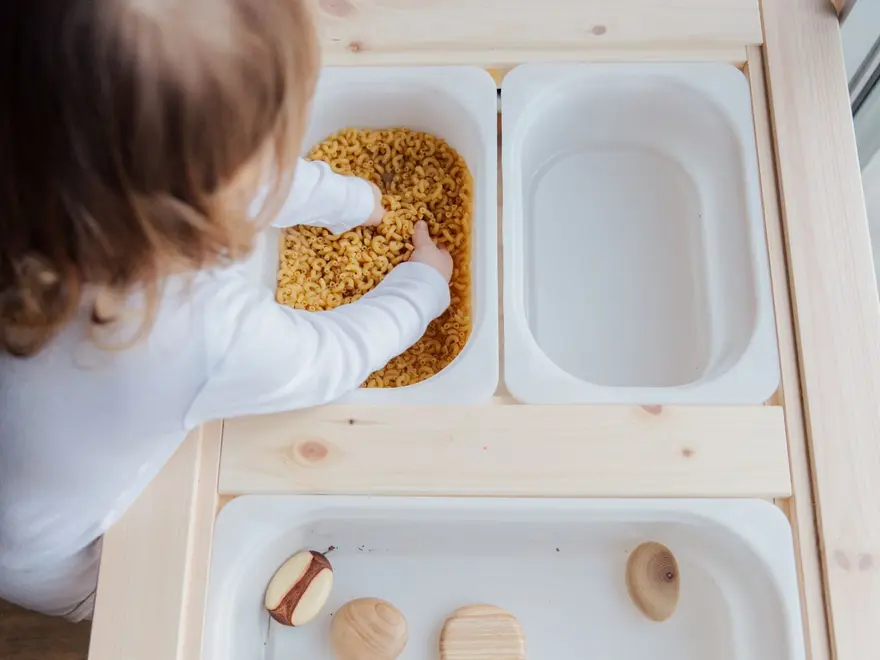

1. bölüm · Minder
Kaba motor ve duygu oyunları
Atölye minderde başlar. Hareketli oyunlar oynanır ve duygular oyunun içinde adlandırılır.
Neden böyle? Hareket ederken çocuk hem bedenini hem de duygularını tanımaya başlar.
Küçük ruhlar, büyük keşifler
Psikolojik danışman eşliğinde ebeveyn katılımlı 60 dakikalık atölye.
Bir atölye nasıl geçer?
Bir Psykids atölyesi
Atölye minderde başlar. Hareketli oyunlar oynanır ve duygular oyunun içinde adlandırılır.
Neden böyle? Hareket ederken çocuk hem bedenini hem de duygularını tanımaya başlar.

Masada duyusal kutularla çalışılır. Farklı dokular elle keşfedilir; tutma ve aktarma oyunlarıyla küçük el kasları güçlenir.
Neden böyle? Dokunarak oynamak, bu yaşta öğrenmenin en doğal yoludur.
Çocuğunuz için bu sadece oyundur. Oysa her oyun uzmanımız tarafından çocuğunuzun gelişimini desteklemek için özenle seçilmiştir.
Dikkat, taklit ve basit problem çözme oyunları
Akranlarıyla yan yana oyun, sıra bekleme ve paylaşma
Minderde denge ve hareket oyunları
Tutma, aktarma ve duyusal kutu oyunları
12–36 ay arasında çocuğun en güvendiği kişi sizsiniz. Atölyeyi bu yüzden birlikte yapıyoruz.
Bu yaşta çocuklar, güvendikleri yetişkin yanlarındayken yeni bir ortamı daha rahat keşfeder.
Atölyede oynanan oyunları siz de öğrenirsiniz ve evde kendi hızınızda sürdürebilirsiniz.
Uzmanımız etkinlik süresince çocuğunuza eşlik ederek onun için en dengeli koşulları yaratmaya çalışır; etkinlik sonrasında sizlere geri bildirimde bulunur.
Uzmanımız
Psykids atölyelerini psikolojik danışman Zeynep Akçay Kızıltaş planlar ve yönetir. Her atölyede çocukların yanındadır. Etkinlik bitiminde geri bildirimlerini aktarır.
Uzmanımız psikolojik danışmanlık ve rehberlik bölümünden mezun olduktan sonra yönetim psikolojisi alanında yüksek lisansını tamamlamıştır. Mesleki hayatını çocuk ve ebeveyn danışmanlığı ile çocuk oyun grupları üzerine sürdürmektedir.
Psykids'in Hikayesi
Psikoloji kelimesinin kökü olan psyche, Yunancada hem “ruh” hem “kelebek” anlamına gelmektedir. Kelebek gibi her çocuk da kendi hızında, kendi dönüşümünü yaşar. Psykids, bu dönüşümün ilk yıllarında çocuğun yanındadır. Oyunla duyguları tanımaya, güvenle bağ kurmaya ve dünyayı keşfetmeye alan açar. Çünkü ruhun gelişimi oyunla başlar.
Konum
Cevizlik, Hüsreviye Sk. no:26 taksim D:3, 34142 Bakırköy/İstanbul
Yakın semtler
Sık sorulan sorular
Aradığınız yanıt burada yoksa bize yazın. Her soruyu memnuniyetle yanıtlarız.
0–6 yaş, beynin gelişiminin en hızlı olduğu ve en çok sinirsel bağlantının kurulduğu dönemdir. Sürece erkenden başlamak doğru uyaranlarla beyin gelişiminin desteklenmesini sağlar. Her yaş bir fırsattır, önemli olan çocuğun içinde bulunduğu gelişim dönemine uygun bir programla desteklenmesidir. Psykids atölyeleri 12–36 aylık çocuklar içindir.
Atölyeler minder ve masa olarak 2 bölümden oluşmaktadır. Minder bölümünde haftanın temasına uygun ritim, hareket ve sosyal-duygusal beceriler çalışılır. Ardından masa bölümüne geçilir. Bu bölümde duyu-motor gelişimi destekleyen duyusal kutularla ilerlenir. 60 dakikalık bu süreçte el-göz koordinasyonu, ince motor beceriler, dokunsal ayırt etme, neden-sonuç ilişkisi kurma, dikkat ve odaklanma, sıra bekleme ve paylaşma, öz düzenleme gibi birçok becerinin geliştirilmesine destek olmaktayız.
Atölyeler hafta içi aynı gün ve saatlerde yapılır. Güncel grup takvimi için WhatsApp'tan bizimle iletişime geçebilirsiniz.
Programımız haftada 1 veya 2 gün, 60 dakika süren atölyeler şeklinde ilerler.
Deneme dersi ve aylık paket ücretlerini WhatsApp'tan hemen iletiyoruz. Karar vermeden önce bir deneme dersine katılabilirsiniz.
Atölyeye siz de katıldığınız için çocuğunuz yalnız kalmaz. Hiçbir çocuk oyuna zorlanmaz; çocuğunuz hazır olduğunda kendiliğinden katılır.
İlk adım
Bizi henüz tanımıyorsanız önce bir atölyeye katılın, uzmanımızla tanışın; devam edip etmemeye sonra karar verin.